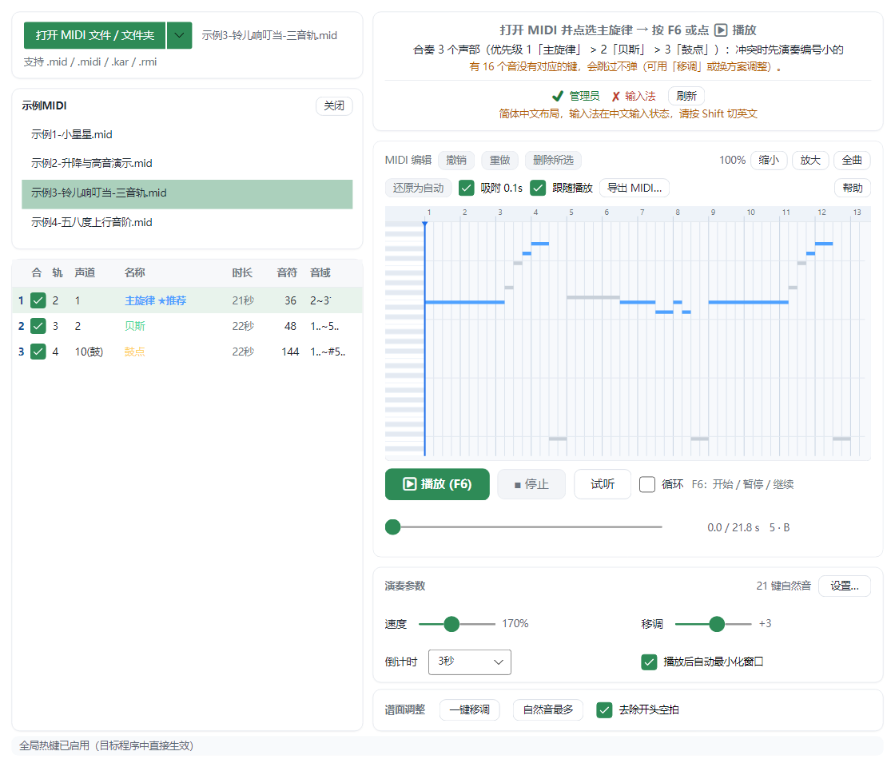

MidiKeyPlayer 快速上手
把 MIDI 文件变成键盘、鼠标按键，弹给前台窗口里的目标程序听。
这份教程只讲最基本的：让一首曲子在目标程序里响起来。全程 2 分钟。
1. 下载
- 打开仓库右侧 Releases，下载最新的
MidiKeyPlayer-win-x64-x.x.x.zip。
- 解压，双击
MidiKeyPlayer.exe。
- 弹窗都放行：UAC 选「是」；SmartScreen 选「更多信息」→「仍要运行」。
杀毒软件报「模拟按键」是误报。白名单要把 MidiKeyPlayer.exe 和 %TEMP%\.net 一起加，只加 exe 会启动失败。
2. 打开文件，选主旋律

- 点左上「打开 MIDI 文件 / 文件夹」，选一个
.mid 文件。
- 左下声轨列表里，点带绿点的那一行（程序推荐的主旋律）。
3. 播放
- 按 F6（或点「▶ 播放」）。倒计时开始，默认 3 秒。
- 倒计时内点一下目标窗口，让它在前台。到点自动开弹。
想停：再按 F6（暂停 / 继续），或点「■ 停止」。鼠标键盘失控就狂按 F6。
没反应？按顺序查这 4 条
- 目标程序是窗口化 / 无边框窗口化（全屏独占收不到按键）。
- 播放前点过目标窗口。
- 输入法切到英文。
- 目标程序是管理员运行的话，本程序也得是管理员。